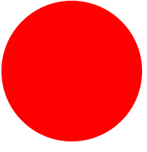

Se debe utilizar el div que figura a continuación para hacer que aplique una transición de:

a
NOTA: para lograr el objetivo utilizar la pseudoclase :hover y aplicar el atributo de estilos transition con la configuración
ease 1s.